O que penicilina tem a ver com aquarela?
Microbiologia para artistas são experiências exploratórias na fronteira da biologia e arte. Um dos projetos que o grupo quer concretizar é a Orquestra Simbiótica, uma performance musical que utiliza placas de petri de microorganismos como instrumentos musicais.
Microbiologia para artistas são experiências exploratórias na fronteira da biologia e arte. Um dos projetos que o grupo quer concretizar é a Orquestra Simbiótica, uma performance musical que utiliza placas de petri de microorganismos como instrumentos musicais.
Experimentação em bioarte
Coleta de microorganismos
Troca de conhecimentos
Nossos encontros
Microbiologia para Artistas começou como um grupo de estudos realizado no BioLiloLab em uma série de 6 encontros entre abril e maio de 2019.
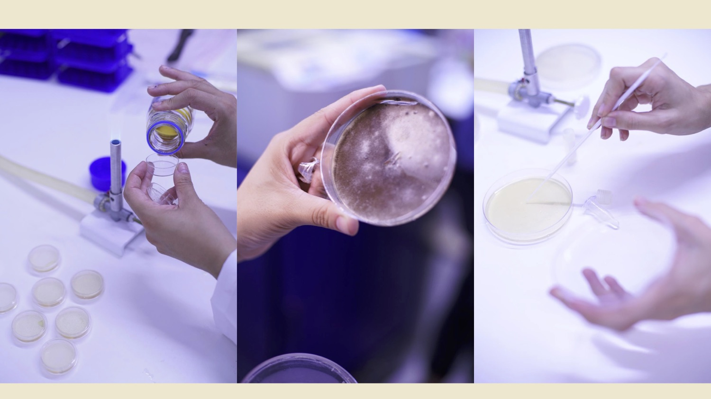
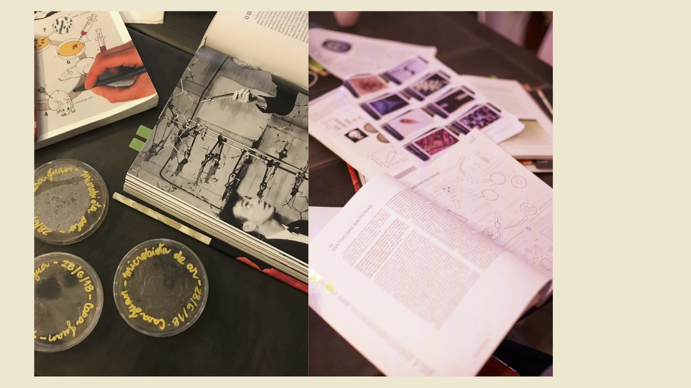
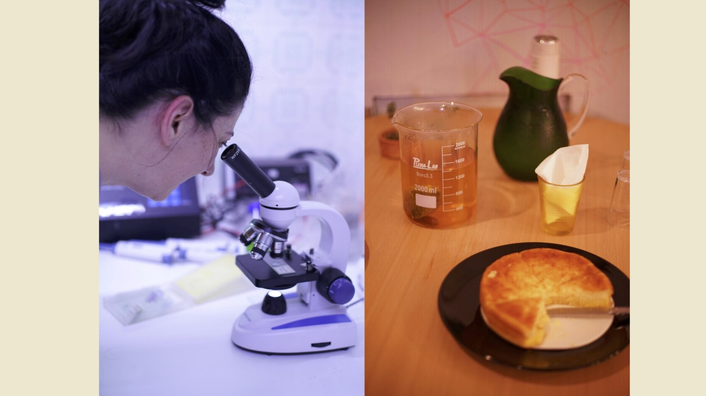
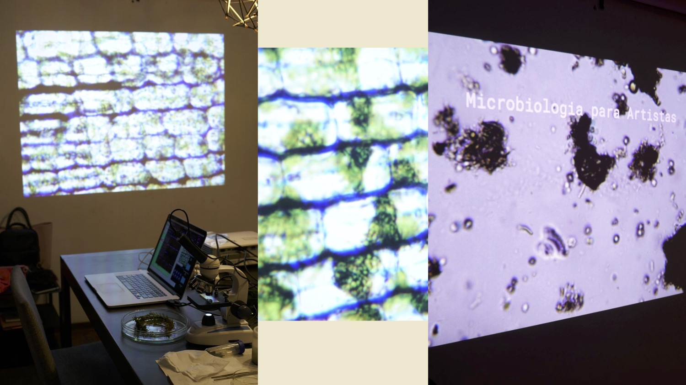
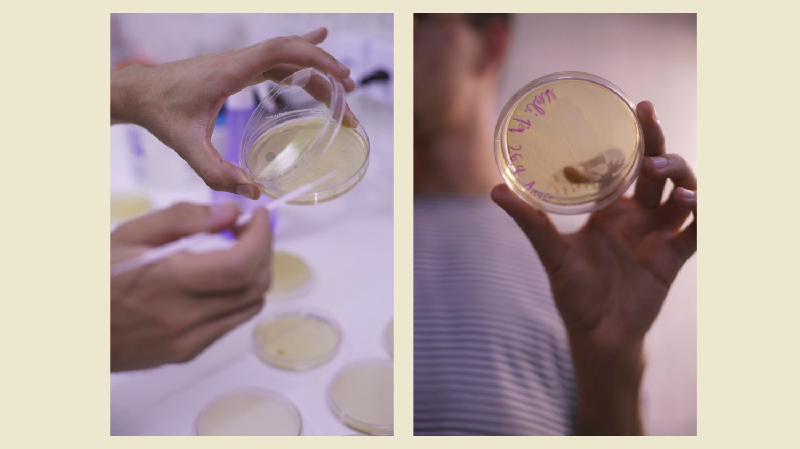
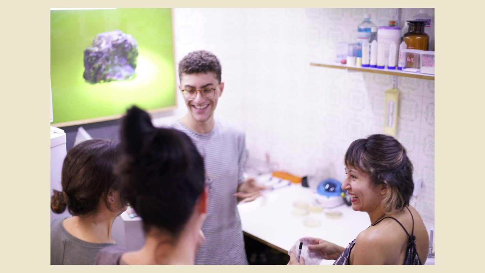
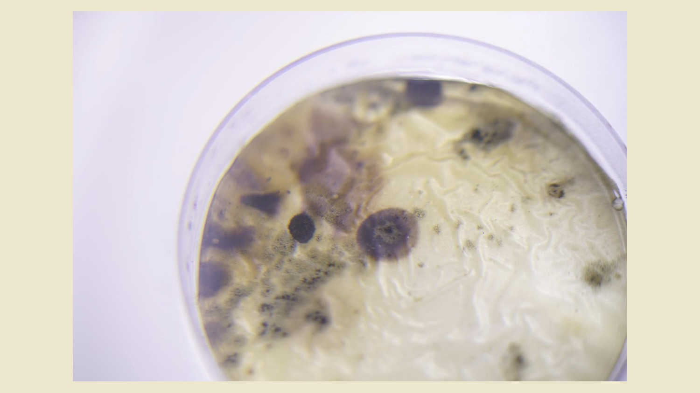
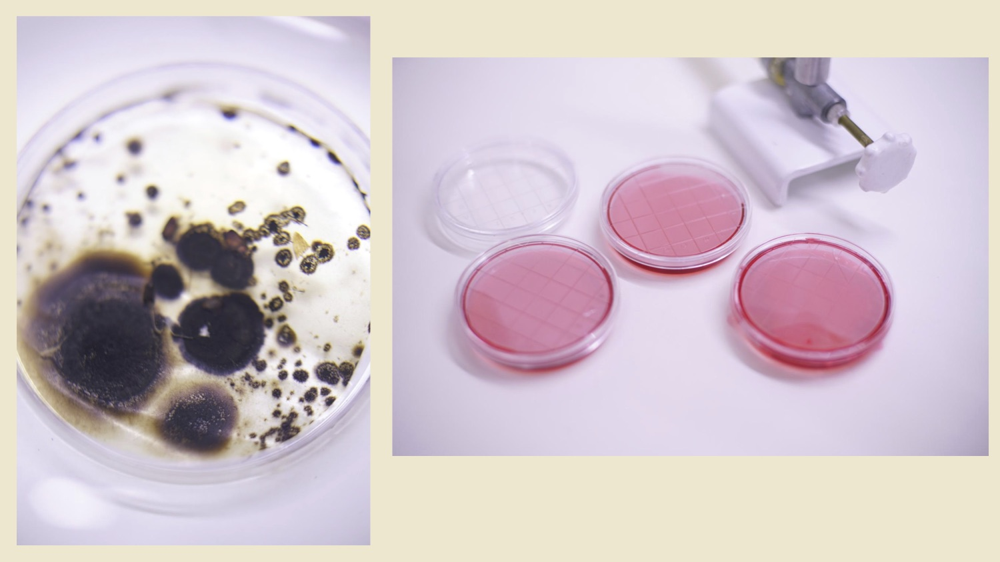
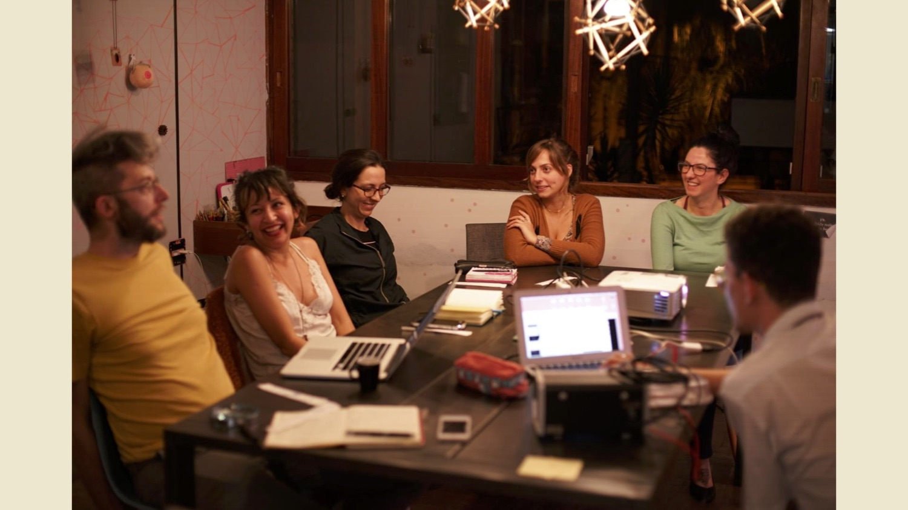
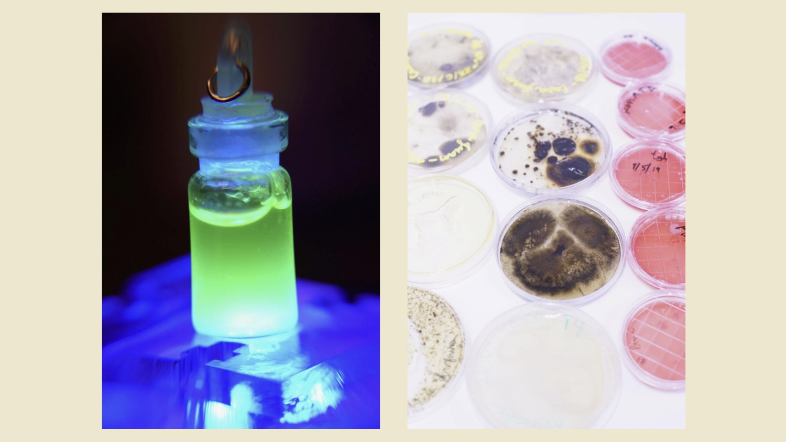
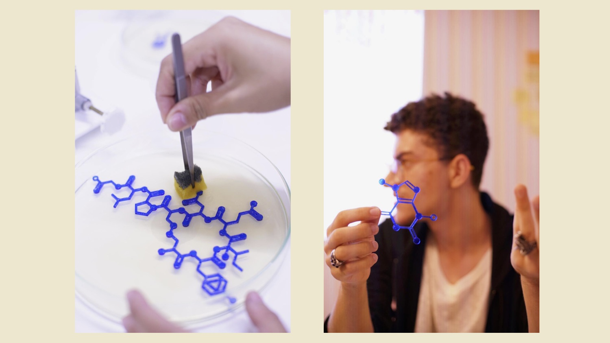
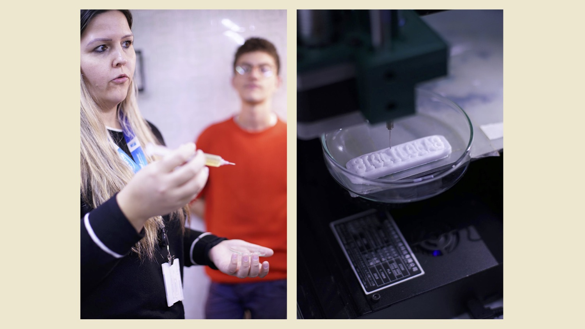
De que valeu o rolê ?
Equipe
Todo mundo junto e misturado. Quase uma colônia ;)
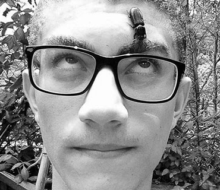
Eduardo Padilha
#Cientista #Coordenador